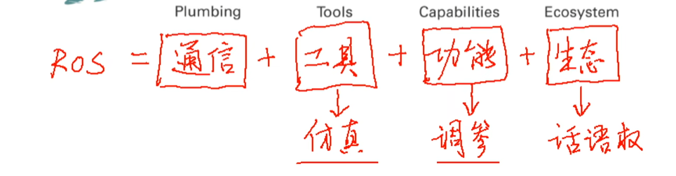
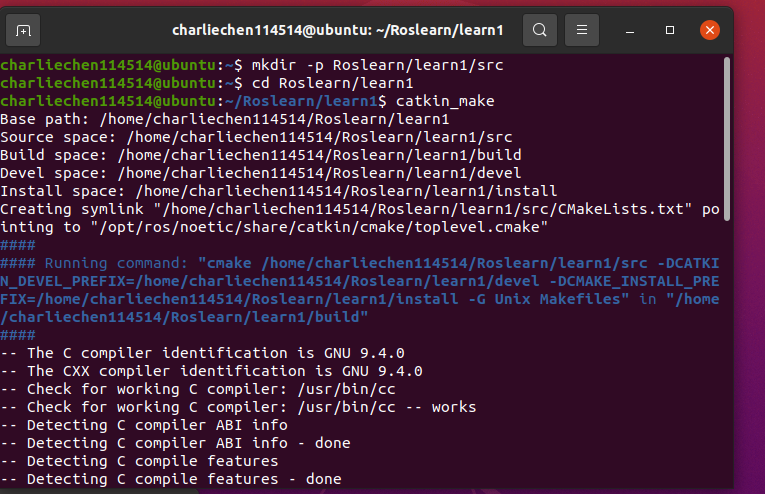
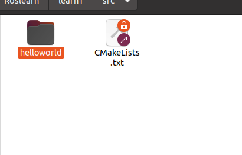
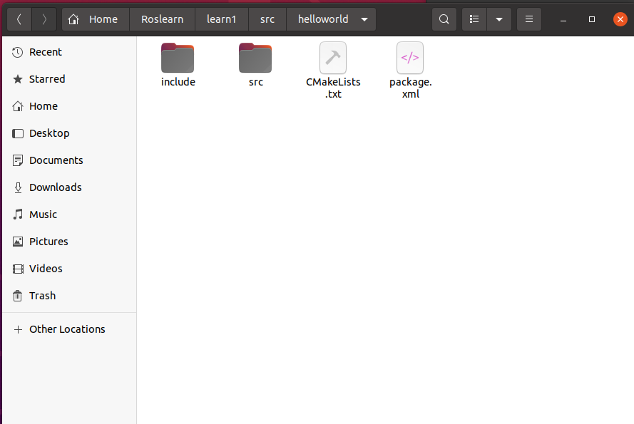
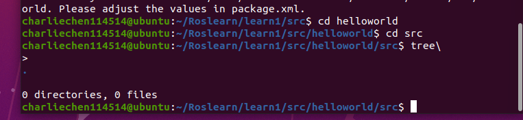
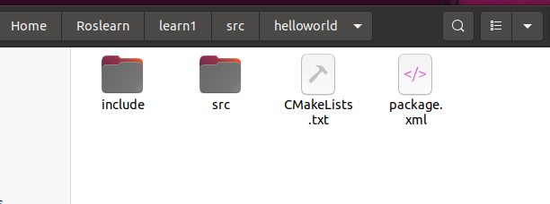
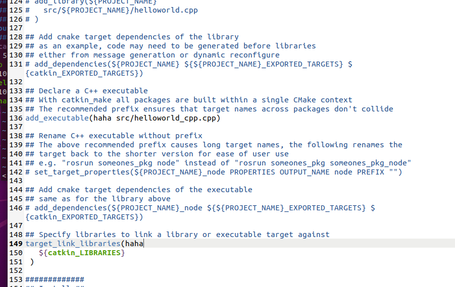
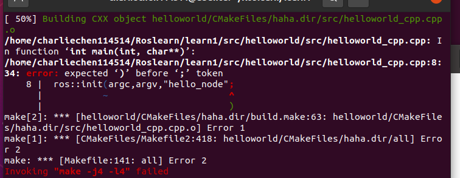
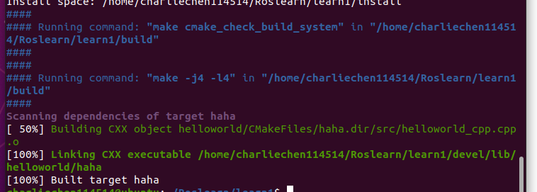
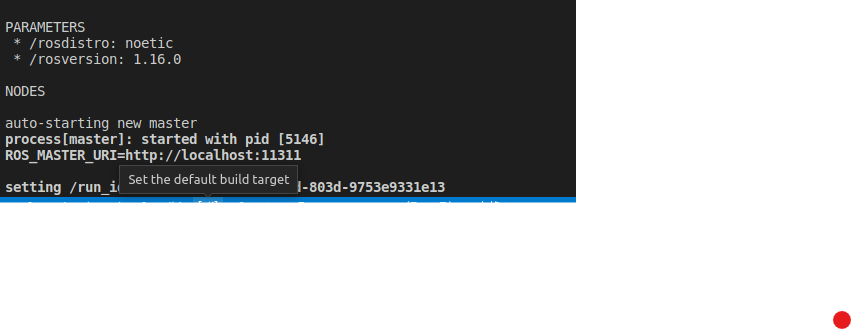

ROS正式开发1
ROS入门
ROS：Robot operating System
他是一个开源元操作系统，类似于我们经典意义的操作系统，有大量的工具，库与协议，还可以在多台计算机上获取，构建编写和运行代码的工具和库。

至于ROS 的安装，这就不在阐述！
还是决定提供一个简单的方式测试一下你的ROS有没有安装成功。启动Linux虚拟机，随后开三个终端！
第一个终端启动ros环境，输入
roscore 第二个输入
rosrun turtlesim turtlesim_node 第三个输入
rosrun turtlesim turtle_teleop_key 看看小乌龟可不可以跑！注意第三个终端要在最上面！（焦点必须在第三个终端）
体验经典：hello world
ROS工作的程序有C++ 和 Python。
首先，我们需要让Linux认识一下ROS的库！这需要我们来初始化工作环境！其基本步骤如下：
先创建一个工作空间
创建一个工作包
编辑源文件
编辑配置文件
编译并执行
当然，真正的差异就在第四步，那我们先来看前几步！
第一步：
简而言之，找个地方！安装当下的文件，今天我们先创建一个RosLearn 文件夹吧，以及我们的第一个实验：Learn1,注意，还要整一个 src 文件夹，并且必须是这个名字！！！
mkdir -p Roslearn/learn1/src
cd Roslearn/learn1
catkin_make #this instructions aims to init the workspace!
-16806218769883.png)
这些正是Cmake的日志，下面开始第二部，创建一些简单的package!
我们把我们一切的源文件放到src文件夹下，随后，在命令行下输入
cd src 如是，创建功能节点即可
catkin_create_pkg 'packName' 'dependency' #when writing , you are no need to add ''!
# examples
catkin_create_pkg helloWorld roscpp rospy std_msgs 会发现：


多了很多文件，我们不予理会，还没到时候！
roscpp是C++的实现库，rospy是 python库的，这点需要注意！
好了，开始第三步！！！cd到包里的src文件

如果熟悉 vim, 可以直接 vim helloworld_cpp.cpp来一个！
vim helloworld_cpp.cpp 书写这些代码！
#include"ros/ros.h"
int main(int argc,char* argv[]){
ros::init(argc,argv,"hello");
ROS_INFO("hello world!!!");
return 0;
} 摁esc退出insert模式，随后:wq退出vim。
随后，更改CmakeLists 配置文件，注意到是这里的

找到第136行的 add_executable,和第149行的target_link_library做出这样的更改

这个haha是Cmake下的临时变量，注意到149行的name必须和136行的name一致
最后一步就是编译！！！
退回到最顶层工作文件夹，再次编译，若有错，按照报错改！

没有错的话，是这样的

开一个新端
先让ros环境启动一下！
roscore 回到原来的终端，注意是原来的！！！
source ./devel/setup.bash 不知道啥情况的找到这个文件然后source一下。
下面，就可以有
rosrun helloworld haha
#helloworld包下的haha 至于集成的开发环境，可以考虑VScode+插件，具体的配置方法在我的博客已经讲述过了！不再讲述！
ROS节点说明
我们大多数时候需要启动多个ROS节点，这就需要我们写Launch文件来完成这个工作！
其实现如下：(以经典乌龟为例)
1)选定功能包右击—>添加launch文件夹
2)选定launch文件邮寄—>添加launch文件(xml文件)
3)书写
<launch>
<node ... />
</launch> node : 节点
pkg 功能包
type: 被运行的节点文件
name 为节点命名
output 设置日志的输出目标
roslaunch 包名 launch文件名称撸代码
下面,在一个节点下新建一个launch文件夹,随后在这个文件夹下面新建xml文件
<launch>
<!-- add nodes here-->
</launch> 不要急着就写下面,先保存,后跑一下可不可以跑!
摁 ctrl + ~打开bash ,先搞一下环境变量 source ./devel/setup.bash
然后跑一下

这个Launch标签就是启动环境的,下面开始书写
<launch>
<!-- add nodes here-->
<node pkg="turtlesim" type="turtlesim_node" name="GUI">
<node pkg="turtlesim" type="turtle_teleop_key" name="Key">
<node pkg="hello_cpp" type="hello_cpp_c" name="try" output="screen">
<!-- pkg是包名 type就是运行文件!切记-->
<!-- output 表示的是输出的日志输出在哪里-->
</launch>